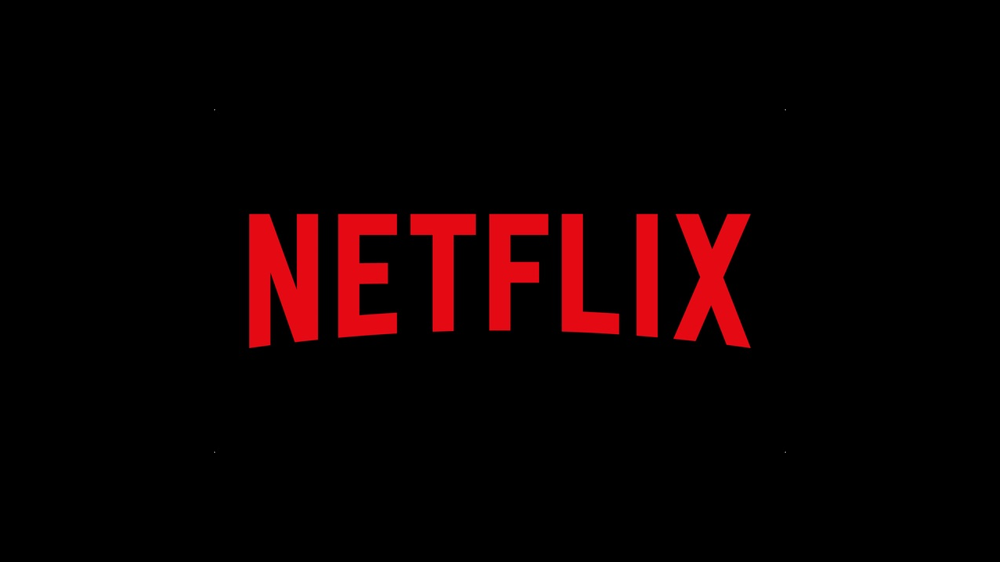
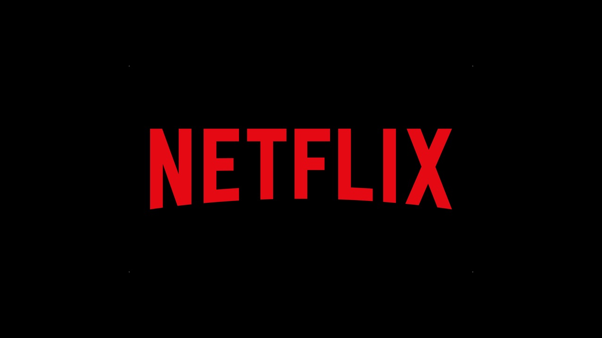
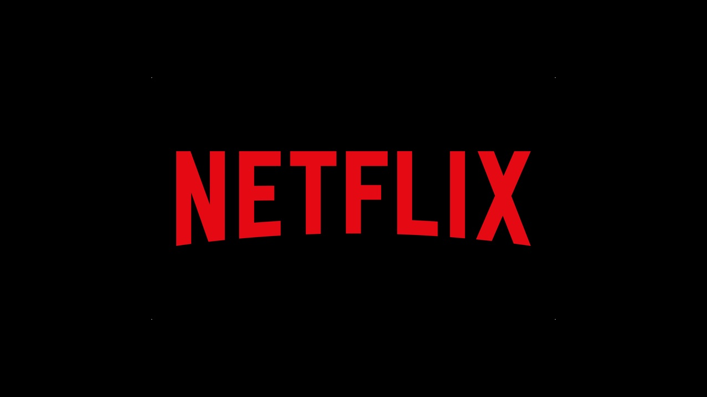
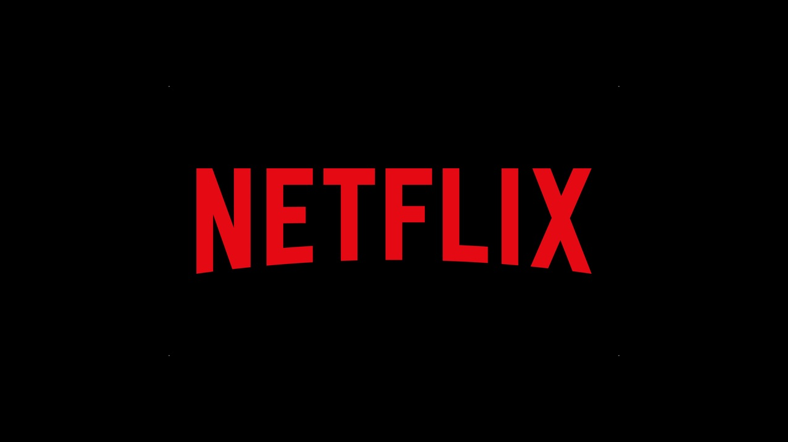

Hasta hace años atrás, antes de la aparición de la tecnología Streaming, para poder de disfrutar de una película o un archivo de música desde Internet, era necesario esperar cantidades enormes de tiempo para que el archivo se descargara completamente y poder disfrutarlo, ademas de que la banda ancha desde ese entonces no era lo bastante grande en comparación a la actual. Con la aparición de esta tecnología (1995), el usuario puede reproducir el archivo de audio o video en el mismo instante en que se está descargando (Tiempo Real), ahorrándose el tiempo que tarda la descarga del archivo. Básicamente existen tres tipos de acceso continuo a contenidos multimedia: las descargas tradicionales, que requiere del almacenamiento completo del archivo en el disco duro local antes de reproducirlo; la descarga progresiva, donde el cliente reproduce el contenido a medida que lo descarga al disco local (ej: YouTube) y Streaming, donde el cliente reproduce la información según llega segmentada y luego la descarta. Esta tecnología tiene tanto sus beneficios como sus contras, los cuales Para hacer uso de esta tecnología, se necesita por lo menos tener un ancho de banda mínimo igual a la tasa de transferencia del servidor, de lo contrario se producirían cortes y la calidad de reproducción se verá afectada, que es justamente lo que esta tecnología no quiere, ya que busca un flujo continuo de archivos. Esta tecnología nació en el año 1995 junto con la aparición de RealAudio 1.0, un formato que permite justamente reproducir el audio en tiempo real; pero no se hizo popular sino hasta el año 2000 cuando el ancho de banda se hizo lo suficientemente barato y rápido para gran parte de la población. Antes de la aparición de esta tecnología, la reproducción de contenido multimedia a través de Internet implicaba descargar completamente el archivo al disco duro local. Como estos archivos multimedia son de gran tamaño, su descarga y acceso como paquetes completos resultaba un mecanismo lento. Nuestra forma de consumir los medios ha cambiado con rapidez, especialmente durante las últimas décadas. Si en el pasado todo el mundo se reunía frente al televisor o a un aparato de radio para pasar un momento de entretenimiento o ponerse al día con las noticias del mundo, hoy en día cualquier persona puede usar su smartphone u otro dispositivo para ver películas, escuchar música, leer diarios o libros. Esta evolución transformó las conductas, la comunicación y a toda la industria de producción de medios y entretenimiento. Y detrás de dicha evolución, es necesario contar con un soporte tecnológico cada vez más potente.
El streaming en Internet le permite ver vídeos, escuchar música e incluso presenciar acontecimientos en directo desde su PC, portátil, smartphone, tableta o televisión inteligente conectado a Internet. La tecnología de Streaming abre la puerta a un mundo de nuevas fuentes de entretenimiento e información. El streaming es un tipo de tecnología multimedia que envía contenidos de vídeo y audio a su dispositivo conectado a Internet. Esto le permite acceder a contenidos (TV, películas, música, pódcast) en cualquier momento que lo desee, en un PC o un móvil, sin someterse a los horarios del proveedor. El streaming supone un gran cambio en la forma en la que accedemos a los contenidos multimedia. No hace mucho, todos dependíamos de los servicios de las emisoras para acceder a las noticias y al entretenimiento. Usábamos radios y televisores para recibir lo que la emisora quisiera emitir y escuchábamos los programas que ofrecían en su horario. Todo eso ha cambiado con Internet. Ahora podemos consumir la música, las noticias, los programas de TV y las películas que queramos, cuando y donde queramos. Y podemos hacerlo desde casi cualquier dispositivo: smartphone, tableta, PC e incluso la televisión. Todo esto es posible gracias al streaming. La tecnología de streaming marca una diferencia fundamental en la forma de distribuir el contenido. Le facilita ver una película en su PC o escuchar un pódcast en su móvil en el momento en el que lo desee. Y lo mejor de todo es que no tiene que saber nada especial para reproducir una película, está disponible con solo tocar un botón. El streaming es enviar y recibir datos en un flujo continuo a través de una red informática, desde un servidor remoto hasta un dispositivo. El streaming en línea permite que se inicie la reproducción de contenido mientras el resto de los datos todavía se está enviando al dispositivo. Cuando transmita contenidos por Internet, en cuanto el ordenador o el teléfono empiecen a recibir los datos, podrá empezar a ver el programa, la película o cualquier otra cosa que esté transmitiendo. Mientras el contenido de vídeo o audio sigue reproduciéndose, el resto de los datos se transmiten al dispositivo de forma gradual. Cuando hace streaming, puede empezar a consumir contenidos al instante, sin tener que esperar a descargar todo el archivo. El streaming se suele utilizar para el audio, el vídeo y los juegos. Siempre que tenga una conexión a Internet fiable, el dispositivo podrá reproducir toda la película o el programa correctamente y sin interrupciones. Cada vez que ha usado servicios de música como Spotify o Apple Music, reproductores de vídeo como YouTube o Netflix, aplicaciones como Twitch o algunos tipos de juegos en línea, ha visto el streaming en acción.
RegresaEl streaming funciona descomponiendo el contenido (por ejemplo, una película) en pequeños fragmentos o paquetes de datos. Estos paquetes de datos se envían al navegador, donde el reproductor de vídeo interpreta los datos como una película. En las emisiones de los medios de comunicación, los sonidos e imágenes se codifican en ondas y después son descodificadas por receptores de radio o televisión. El streaming en Internet funciona de forma diferente. No hay un solo canal abierto entre la fuente y el destino. En lugar de ello, la fuente agrupa los datos en pequeños paquetes y los envía a través de Internet. Es similar a lo que ocurre cuando envía un correo electrónico o publica algo en un sitio web. Esos paquetes individuales pueden viajar desde la fuente a su dispositivo a diferentes velocidades. Cada uno está etiquetado para que su dispositivo pueda ponerlos en el orden correcto. Una vez que su dispositivo dispone de los paquetes consecutivos suficientes y está listo para reproducirlos, comienza el streaming de contenido. Este proceso se conoce como buffering. Si su conexión a Internet no es lo suficientemente rápida para obtener los paquetes a tiempo cuando los necesita, el contenido podría no reproducirse correctamente. (Vea «Problemas de streaming» más abajo.) Tenga en cuenta que buffering es diferente de la descarga progresiva. Este término hace referencia a algunas descargas que le permiten comenzar a reproducir el contenido antes de que se guarde completamente el archivo. Aún tendrá que guardar todo el archivo en su dispositivo, y puede tener problemas parecidos si los datos no se descargan tan rápido como se usan para la reproducción Para empezar mencionaremos que la tecnología de streaming trabaja utilizando un buffer de datos creado en la computadora del usuario, en este buffer se almacena la información de manera temporal mientras el usuario accede a la misma. Al finalizar la sesión de streaming el buffer es eliminado automáticamente. El streaming puede ser utilizado bajo demanda y uno de los usos más populares es el de las emisiones de radio online y tv online en directo a través de Internet. En este tipo de streaming usted o la persona que realiza la transmisión envía la señal de audio/video a nuestro servidor de streaming (broadcast server) y este almacena la información en un buffer temporal. Los oyentes se conectan al servidor de streaming a través de un enlace único, generalmente compuesto por un puerto en el servidor de streaming de manera que tienen acceso al flujo generado por el emisor y pueden así escuchar la señal de audio en directo o visualizar la transmisión de video.
RegresaPuede escuchar o ver casi cualquier cosa usando la tecnología de streaming. Muchos servicios proporcionan acceso gratuito, otros requieren una suscripción de pago u otro tipo de cuota. Puede encontrar diferentes tipos de servicios de streaming disponibles para eventos en vivo, vídeo y películas, música y juegos. El streaming en vivo le proporciona acceso a eventos en el momento en que suceden. Los deportes profesionales son algunos de los eventos deportivos más populares de streaming en vivo, pero esta categoría también incluye emisiones de radio y vídeos en vivo de canales de redes sociales como Facebook. Por ejemplo, la Super Bowl LII tuvo un pico de 3,1 millones de espectadores por streaming, con una audiencia en línea promedio de 2 millones. El partido de fútbol americano es uno de los acontecimientos deportivos mas vistos por streaming, pero su audiencia es pequeña si se compara con la tradicional: otros 100 millones de televidentes siguieron la emisión. ¿Cómo funciona el streaming de vídeo en vivo? El streaming en vivo funciona de forma bastante sencilla: Sintoniza una fuente que transmite el evento. A menudo puede encontrar retransmisiones en vivo de noticias de política, conciertos de música y acontecimientos interactivos de redes sociales. Incluso puede encontrar fuentes que proporcionan retransmisiones en vivo de emisoras de radio y televisión locales y de todo el mundo. Streaming de vídeo El contenido de streaming más popular es el vídeo. Ya se trate de fragmentos cortos de vídeo o de largometrajes, la mejor forma de verlos es usar un servicio de streaming. YouTube es la fuente de vídeo más conocida, la gente ve unos 5000 millones de vídeos en YouTube cada día. Y se cargan 300 horas de nuevos contenidos en el sitio cada minuto. El bloqueo geográfico hace referencia a los sistemas que controlan el acceso a los contenidos según su ubicación. Este control específico está motivado por el copyright y otras razones. Por ejemplo, algunos servicios proporcionan derechos para mostrar cierta película a audiencias de EE. UU., pero no en Europa (o viceversa). En algunos casos, puede eludir el bloqueo geográfico usando una red privada virtual (VPN). Una VPN le proporciona una conexión a Internet más segura y ofrece el beneficio adicional de aparecer conectado desde una ubicación diferente a la original. Por ejemplo, si se suscribe a un servicio de streaming de vídeo en los EE. UU., puede que no tenga acceso a él cuando viaje a otros países. Podría usar Avast Secureline VPN para acceder al contenido por el que ha pagado incluso fuera de los EEUU. El streaming de vídeo es una forma de acceso a los datos que se basa en «guardar y enviar». Esto significa que los archivos se guardan en un servidor al que puede acceder bajo demanda cuando lo desee. Mucha gente puede acceder al mismo contenido a la vez, pero cada uno de ellos puede comenzar o parar lo que están viendo sin afectar a los demás. Algunos servicios -Como Netflix y Hulu- cargan una cuota de suscripción para acceder, mientras que YouTube y otros le permiten acceder gratis al contenido, pagando sus facturas mediante la publicidad. Streaming de música Es fácil escuchar música desde servicios de streaming, tanto gratuitos como por suscripción. Lo único que necesita es registrase en un sitio como Apple Music o Spotify. Puede encontrar rápidamente la música de un artista, si sabe lo que desea escuchar o bien seleccionar un género y descubrir nuevas canciones. Algunos sitios de streaming de música le ofrecen sugerencias según sus hábitos anteriores de escucha y las canciones que ha dicho que le han gustado. El streaming de música ha cambiado los hábitos de escucha de millones de personas. Tras alcanzar un pico de ventas de 943 millones de unidades en el año 2000, las ventas de CD de música en los EE. UU. Se desplomaron hasta los 52 millones de copias en 2018. Al principio, la gente compró y descargó archivos MP3, pero también estos han declinado. De acuerdo con BuzzAngle Music, las ventas digitales en los EE. UU. cayeron más de un 28 % en un año, de más de 620 millones de unidades en 2017 a cerca de 450 millones de unidades en 2018. ¿La razón? El audio en streaming Durante el mismo periodo, el streaming bajo demanda se incrementó de cerca de 600 millones de unidades a más de 800 millones, un aumento de más de un tercio en solo un año. Según la RIAA, la música en streaming representa actualmente un 75 por ciento del total de ingresos de las grabaciones de música en EEUU. Los servicios de música, al igual que los de vídeo, guardan archivos de grabación para que acceda a ellos cuando lo desee. Algunos están disponibles de forma gratuita, financiados con anuncios, como Pandora y Spotify. Estos servicios también ofrecen opciones de suscripción prémium sin anuncios. Los servicios de streaming de sonido no se limitan a la música. También puede escuchar pódcast y audiolibros, además de recibir emisoras de radio de todo el mundo. Streaming de juegos y aplicaciones También puede utilizar el streaming para los videojuegos interactivos. Antes podía comprar un juego en un medio físico y jugarlo o instalarlo en su videoconsola o su PC. De los juegos físicos se pasó a la descarga, pero aún tenía que jugar en su dispositivo local; y ocupar más de su preciado espacio de almacenamiento en disco. Ahora puede jugar en streaming y elegir juegos de una completa biblioteca. Puede adquirir un título o pagar una suscripción para acceder a una amplia gama de juegos. Puede jugar en su PC, tableta o smartphone; siempre que disponga de una conexión a Internet. La selección de juegos va de los sencillos rompecabezas y juegos de acción hasta los juegos más vendidos. Existen servicios de streaming de juegos para aquellos que desean explorar hasta proveedores con sus propios sitios de juegos en streaming. Cuando realiza stream de juegos o aplicaciones, su dispositivo se convierte en un terminal del programa. Esto significa que además de recibir datos, como imágenes y sonidos, su dispositivo también los envía al servidor. Entre estos están las entradas del mando que se usan para controlar su personaje en el juego.
RegresaEl streaming en Internet ha revolucionado la forma en la que consumimos multimedia. Ya estemos consultando las últimas noticias, escuchando a sus artistas musicales favoritos o dándose un respiro con vídeos de cachorros, podemos conectarnos en cualquier momento y lugar desde nuestros PC, tabletas o smartphones. Puede comenzar a ver o escuchar de forma casi instantánea, sin tener que esperar a que se descargue un archivo grande. Y como no está guardando archivos en su sistema, existe un riesgo mucho menor de que se quede sin espacio o descargue un código malicioso en su dispositivo. Además, el streaming le permite ver acontecimientos en vivo en el momento en el que se producen, sin tener que esperar a que se guarden los datos para que estén disponibles. Desde el ocaso del cable hasta la desaparición del CD de audio, el streaming ha cambiado la forma en la que interactuamos con todo tipo de medios. El streaming es una manera muy efectiva de promocionar una marca, construir relaciones con la audiencia y conseguir la fidelización de los clientes. Asimismo, genera numerosas oportunidades para aprender e, incluso, para divertirse. ¿Quieres conocer todas las ventajas de usarlo en tu negocio? A continuación, presentamos 5 grandes beneficios del streaming. Movilidad: Las aplicaciones que permiten realizar transmisiones de videos en tiempo real son tan populares porque se pueden usar en dispositivos móviles, como el teléfono celular y la tablet. Las apps permiten que la transmisión se realice en cualquier momento y lugar, alcanzando a audiencias que están en todas partes del mundo, independientemente del lugar en el que opere el negocio. Ahorro: Hacer marketing de forma tradicional puede ser muy costoso. Afortunadamente, el streaming se presenta como una de las maneras que más ahorro produce para promocionar una marca. De hecho, hasta las pequeñas empresas pueden publicitar gracias a los costos de hacerlo a través de esta tecnología en redes sociales y llegar a un público mucho más grande con muy poca inversión monetaria. Alta calidad: Hasta hace muy pocos años, la calidad del streaming era relativamente baja. Hoy, basta con echar un vistazo a un juego de azar como el blackjack en Betsafe Perú para entender cómo ha evolucionado esta tecnología. Es que las compañías que se dedican a las telecomunicaciones han perfeccionado tanto el streaming que, hoy por hoy, la calidad de los videos es casi perfecta. Esta es una de las razones principales por las que muchas empresas han comenzado a incorporar videos en vivo a sus estrategias de marketing. En la actualidad, las empresas más reconocidas del mercado usan el live streaming para promocionar su marca y tú deberías hacer lo mismo. Compromiso: La mayoría de los usuarios de Internet busca información en la web y, muchas veces, los videos son la mejor manera de obtenerla. No obstante, tienen muchas opciones para elegir. Para tomar una decisión, se inclinan por aquellas marcas que ofrecen una buena experiencia y conectan con ellos. Por otro lado, la mayoría de los clientes aprovecha el streaming de video no solo para informarse, sino para brindar su opinión. Para las empresas, este feedback es invaluable, ya que les brinda la oportunidad de mejorar su negocio a través de las opiniones de quienes eligen su marca. Profesionalismo: No se necesita invertir en un estudio de grabación o equipo especial para crear videos profesionales. Lo cierto es que las prestaciones que ofrecen los dispositivos móviles en la actualidad permiten grabar videos con total profesionalismo. Esto les permite a las empresas crear contenido fresco y creativo que pueden compartir fácilmente con la audiencia. Nuevamente, no se necesita invertir en grandes sumas de dinero para alcanzar a más clientes y demostrar que son verdaderos expertos en el tema. El streaming se presenta como una manera efectiva de promocionar una marca. Los usuarios lo utilizan para aprender, divertirse e informarse. Entonces, ¿Por qué no crear videos que conecten con ellos? La movilidad, el ahorro, la alta calidad, el compromiso y el profesionalismo son sus 5 grandes beneficios.
Regresa